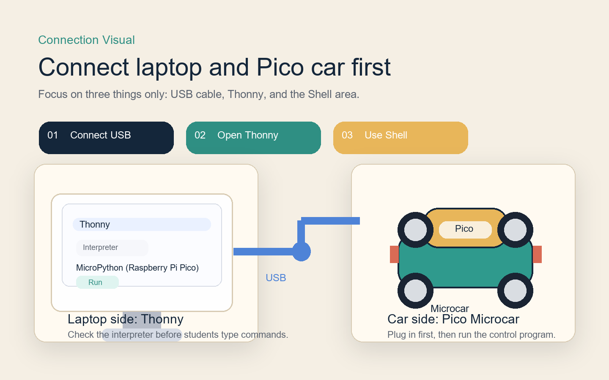

今天完成這 3 件事就很棒
- 把電腦和車子連起來。
- 看懂 `W / A / S / D / X` 代表什麼動作。
- 用鍵盤讓小車動起來，再安全地停下來。
Student Boot Camp
這一頁是你上課時可以直接跟著看的版本。 今天先不要想循跡、感測器或藍牙，只做兩件事： 用 `Thonny` 讓電腦連上 Raspberry Pi Pico 小車，然後用鍵盤控制前進、後退、左轉、右轉、停止。

先認出 Pico 和控制板大概長什麼樣子，等一下接線和操作時會更有方向感。
Quick Visual Start
這一區是給學生建立方向感用的版本。先知道要接哪裡、按哪裡、打哪幾個鍵，整堂課會順很多。

讓學生先知道 USB 線、Thonny、Pico 小車三者的關係，才不會一開始就慌。

今天最重要的是 `Run`、右下角的 Pico 解譯器，還有最下面的 `Shell`。

學生只要把 `W / A / S / D / X` 和動作連起來，就能完成第一堂課的核心任務。
Meet Thonny
我這一段有參考 Thonny 官方網站的呈現方式，把內容收斂成「簡單、乾淨、一步一步」。你今天不需要學完整個軟體，只要先認出它最重要的三個位置。
Interpreter
MicroPython (Raspberry Pi Pico) 這一格選對，小車才會連上。60-min Route
這一段改成更像教學流程圖的版本。你可以把它想成：老師先示範，學生再跟著做，每一段都有清楚的完成線。
先讓每一組都把電腦和小車接好，這是整堂課最重要的起點。
老師先打給學生看，讓大家把按鍵和動作直接連起來。
每個學生都要真的摸到一次操作，不只是看老師演示。
最後用一個簡單小挑戰收尾，讓學生有完成感。
Thonny Steps
你現在不用自己記全部，只要一個步驟一個步驟跟著做就可以。
Thonny Visual Guide
這一段不是實機截圖，而是把真正要看的位置整理成更容易理解的操作圖。老師投影時可以直接用這一區帶學生找位置。
Interpreter
MicroPython (Raspberry Pi Pico) 如果不是這個，請跟著老師一起切換。Action Map
這是今天最重要的一張圖。先會控制，再慢慢學更長的程式。
Teaching Sequence
如果你要現場投影帶讀，建議先走這一條教學順序。每一步都只講一個重點，學生比較跟得上。
先讓學生看到車子會動，再回來解釋函式和指令，成功感會高很多。
從匯入模組、設定腳位、`stop()` 和 `forward()` 開始，就很夠用了。
等學生先知道小車有哪些動作，再讀 `if cmd == "w"` 這段會更好懂。
Code Walkthrough
你不用一次看整份。跟著老師從上往下看，就會知道每一段在做什麼。
Part 1
這一段是在告訴小車：「等一下我要控制哪些腳位。」
from machine import Pin
import sys
import time
M1_A = Pin(12, Pin.OUT)
M1_B = Pin(13, Pin.OUT)
M2_A = Pin(10, Pin.OUT)
M2_B = Pin(11, Pin.OUT)
LED = Pin(25, Pin.OUT)Part 2
老師可以先帶你看 `stop()` 和 `forward()`，知道函式是拿來控制動作的。
def _set_motor(pin_a, pin_b, direction):
if direction > 0:
pin_a.value(1)
pin_b.value(0)
elif direction < 0:
pin_a.value(0)
pin_b.value(1)
else:
pin_a.value(0)
pin_b.value(0)
def stop():
_set_motor(M1_A, M1_B, 0)
_set_motor(M2_A, M2_B, 0)
def forward():
_set_motor(M1_A, M1_B, 1)
_set_motor(M2_A, M2_B, 1)Part 3
當你看得懂方向怎麼改，小車的基本動作就差不多都完成了。
def backward():
_set_motor(M1_A, M1_B, -1)
_set_motor(M2_A, M2_B, -1)
def turn_left():
_set_motor(M1_A, M1_B, -1)
_set_motor(M2_A, M2_B, 1)
def turn_right():
_set_motor(M1_A, M1_B, 1)
_set_motor(M2_A, M2_B, -1)Part 4
這一段是在等待你從 `Thonny Shell` 輸入一個字母。
print("請在 Thonny Shell 輸入 w / a / s / d / x 後按 Enter")
while True:
cmd = sys.stdin.read(1)
if not cmd:
continue
cmd = cmd.strip().lower()
if not cmd:
continuePart 5
這是今天最重要的一段。每個字母都會呼叫一個動作函式。
if cmd == "w":
forward()
elif cmd == "s":
backward()
elif cmd == "a":
turn_left()
elif cmd == "d":
turn_right()
else:
stop()Practice Order
先從最安全、最容易成功的開始。不要一開始就連續按很多指令。
先知道怎麼停車，這樣等一下比較安心。
先讓車子前進一下，再停下來。
讓車子左轉、右轉，熟悉方向感。
讓車子後退，再記得停車。
Today Files
這堂課先用一份主程式就夠了。其他檔案先當補充，不要一下子開太多。